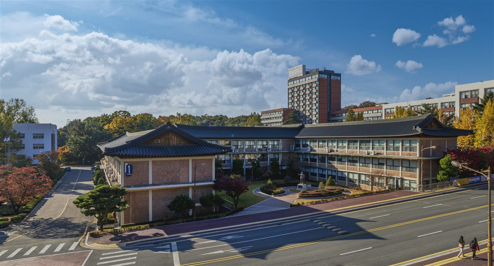

한남대학교는 대전광역시 대덕구에 있는 사립 종합대학입니다. 1956년에 문을 열었고, 미국 남장로교 선교사들이 세운 기독교 대학으로 출발했습니다. 캠퍼스가 약 43만㎡ 규모로 넓고, 2005년에는 대덕연구개발특구 안에 별도의 대전밸리캠퍼스를 열어 두 개의 캠퍼스를 함께 운영하고 있습니다.
2027학년도 수시 원서접수는 2026년 9월 7일부터 11일까지 진행돼 이미 마감됐습니다. 지금 이 글을 읽으실 분은 아마 고1·고2 학부모님이실 것입니다. 그래서 오늘은 경쟁률 이야기보다 이 대학의 전형 구조가 어떻게 생겼는지에 초점을 맞추겠습니다. 구조를 먼저 알면 앞으로 1~2년을 무엇에 쓸지가 정해지기 때문입니다.
숫자 세 개만 기억하시면 됩니다
2027학년도 한남대학교의 수시 모집 규모는 다음과 같이 발표됐습니다.
- 학생부교과전형 — 1,864명. 수시 정원 내 모집의 대부분을 혼자 차지합니다.
- 학생부종합전형 — 541명.
- 실기·실적위주전형 — 175명.
- 정원 내 수시 합계 — 2,580명. 정원 외를 포함하면 2,744명으로 보도됐습니다.
여기서 먼저 보셔야 할 것은 학생부교과의 비중입니다. 앞서 소개한 서울 지역 사립대들과 구조가 정반대입니다. 서울의 여러 대학은 수시의 절반 이상을 학생부종합으로 뽑아서 “생활기록부를 읽어서 뽑는” 성격이 강합니다. 한남대학교는 교과 성적으로 뽑는 칸이 압도적으로 큽니다.
이 차이가 가정에 주는 메시지는 단순합니다. 이 대학을 현실적인 목표로 두고 있다면, 가장 확실한 투자는 내신 등급입니다. 활동을 늘리는 것보다 교과 성적을 반 등급 올리는 쪽이 합격 가능성에 직접 닿습니다.
수능최저학력기준이 없습니다 — 좋은 소식과 나쁜 소식
한남대학교 2027학년도 수시의 가장 큰 특징입니다. 수능최저학력기준을 적용하지 않습니다. 특정 전형만 빼 주는 것이 아니라, 발표된 내용에 따르면 전형 전반에 수능 최저 기준이 걸려 있지 않습니다.
좋은 소식은 분명합니다. 내신은 되는데 수능 모의고사 등급이 불안한 학생에게 이만큼 마음 편한 구조가 드뭅니다. 수시 원서를 쓰고도 11월 수능 성적표를 받을 때까지 “최저를 못 맞추면 어떡하나” 하고 떨지 않아도 됩니다. 해마다 수능최저를 못 채워 떨어지는 지원자가 다른 대학에서는 상당수 나옵니다.
그런데 뒤집어 보면 나쁜 소식도 있습니다. 수능으로 걸러지는 인원이 없으면 지원자가 그만큼 몰립니다. 최저가 없는 전형은 “일단 써 보자”는 지원이 붙기 때문에 경쟁률이 높게 형성되는 경향이 있습니다. 실제로 2027학년도 수시에서 한남대학교의 정원 내 평균 경쟁률은 5.06대 1로, 2,580명 모집에 13,043명이 지원했습니다. 전년도와 거의 같은 수준이었습니다.
그리고 더 중요한 함정이 하나 있습니다. 수능최저가 없다는 말은 교과 성적 하나로 승부가 난다는 뜻입니다. 다른 변수로 뒤집을 여지가 적습니다. 그래서 이 대학은 “수능 준비 안 해도 되는 대학”이 아니라 “내신을 미룰 수 없는 대학”으로 이해하시는 편이 정확합니다.
학생부교과 — 반영 과목 수를 먼저 보세요
1,864명을 뽑는 학생부교과에는 여러 전형이 들어 있습니다. 보도된 내용을 기준으로 정리하면 이렇습니다.
- 일반전형 — 교과 성적 100%로 선발합니다. 면접이 없습니다.
- 지역인재교과우수자전형, 지역인재교과우수자(기초생활)전형 — 해당 권역 고등학교 출신 학생을 대상으로 하는 전형입니다.
- 기회균형특별전형, 사회통합전형 — 자격 요건이 따로 있는 전형입니다.
- 어학인재전형 — 이 전형만 교과 50% + 면접 50%로 선발합니다. 학생부교과 안에서 면접이 들어가는 유일한 칸입니다.
고1·고2 가정에서 지금 당장 쓸모가 있는 정보는 교과 반영 과목 수입니다. 이 대학은 전 과목을 다 반영하지 않습니다.
- 인문계열 — 국어·수학·영어·사회·과학 중 상위 15개 과목 + 진로선택과목 3개
- 자연계열 — 수학 필수 3과목 + 국어·수학·영어·사회·과학 중 상위 12개 과목 + 진로선택과목 3개
- 예·체능계열 — 10개 과목
이 표가 알려 주는 것이 두 가지 있습니다. 첫째, 인문계열은 잘한 과목 위주로 반영되므로 한두 과목을 크게 망친 학생에게도 길이 남아 있습니다. 둘째, 자연계열은 사정이 다릅니다. 수학 3과목이 필수로 들어갑니다. 수학을 피해서 다른 과목으로 메우는 전략이 통하지 않는다는 뜻입니다. 자연계열을 보고 있는 중3·고1이라면 이 한 줄만으로도 다음 2년의 우선순위가 정해집니다.
학생부종합 — 면접이 있는 칸과 없는 칸
학생부종합 541명은 하나의 전형이 아닙니다. 준비 방법이 갈리는 지점은 면접이 있느냐 없느냐입니다.
- 한남인재Ⅰ(서류)전형 — 서류종합평가 100%. 제출한 서류만으로 합격자를 가립니다.
- 한남인재Ⅱ(서류+면접)전형 — 서류종합평가와 면접평가를 함께 봅니다.
- 창업인재(서류+면접)전형 — 서류와 면접으로 선발합니다.
서류종합평가는 학교생활기록부에 기재된 모든 영역을 통해 진로역량·학업역량·공동체역량을 종합적으로 평가한다고 안내돼 있습니다. 면접은 학생부를 토대로 전공적합성과 인성을 확인하는 서류 확인 면접으로 진행됩니다.
‘서류 확인 면접’이라는 말을 가볍게 보지 마시기 바랍니다. 미리 준비한 답변을 외워 가는 면접이 아니라, 생활기록부에 적힌 활동을 본인이 설명할 수 있는지를 보는 자리라는 뜻입니다. 그러려면 활동을 할 때마다 “왜 했고, 무엇이 어려웠고, 그래서 무엇을 다르게 했는지”를 스스로 적어 두어야 합니다. 고3 여름에 몰아서 만들 수 있는 것이 아닙니다.
참고로 2027학년도 수시에서 경쟁률이 가장 높았던 곳은 미디어영상학과(한남인재Ⅱ전형)로, 6명 모집에 87명이 지원해 14.50대 1이었습니다. 학생부종합의 소수 모집 학과는 이렇게 경쟁률이 크게 튀는 경우가 있습니다.
전형 간 복수지원이 됩니다
지원자 입장에서 실질적인 이점이 하나 더 있습니다. 한남대학교는 전형 간 복수지원이 가능하도록 운영한다고 안내했습니다. 지원자의 부담을 줄이려는 설계라는 설명입니다.
이것이 왜 중요한가 하면, 수시 지원은 전국에서 6곳까지로 제한되기 때문입니다. 한 대학에서 두 전형에 함께 지원할 수 있다면, 그 대학에서 쓸 수 있는 칸이 늘어나는 셈입니다. 예를 들어 내신이 안정적인 학생이 학생부교과에 쓰면서 학생부종합에도 함께 지원하는 조합을 생각해 볼 수 있습니다.
다만 복수지원이 가능한 조합과 제한되는 조합은 전형별로 다를 수 있고, 수시 6회 제한은 그대로 적용됩니다. 실제 지원 때는 반드시 모집요강에서 조합을 확인하셔야 합니다.
지역인재 전형 — 고1 이하 가정이 알아 둘 기준
한남대학교는 비수도권 대학이므로 지역인재 전형이 있습니다. 학생부교과 안에 지역인재교과우수자전형과 지역인재교과우수자(기초생활)전형이 운영됩니다.
지역인재를 함께 고민하시는 가정이라면 기준을 하나 알아 두셔야 합니다. 2027학년도 지역인재 지원 자격은 해당 권역 고등학교에서 전 교육과정(3년)을 이수한 학생이 기준이고, 중학교 과정까지 해당 지역에서 다녀야 하는 강화된 요건은 2028학년도부터 적용됩니다. 이사나 전학 계획이 있는 고1 이하 가정은 미리 확인해 두시기 바랍니다.
다만 이 글에서는 한남대학교 지역인재 전형의 구체적인 인정 권역 범위와 모집단위별 인원은 확인하지 못해 적지 않았습니다. 권역 설정은 대학마다 다르므로 입학처 자료에서 직접 확인하셔야 합니다.
지원 전 체크리스트
- 내신으로 갈 것인가, 서류로 갈 것인가. 이 학교 수시의 대부분이 학생부교과입니다. 서울 대학 기준으로 “활동을 채워야 한다”고 생각하고 계셨다면 우선순위를 바꿔 보셔야 합니다.
- 자연계열인가. 그렇다면 수학 3과목이 필수 반영입니다. 수학을 미뤄 두고 다른 과목으로 메우는 계획은 이 대학에서 통하지 않습니다.
- 망친 과목이 몇 개인가. 인문계열은 상위 15과목, 자연계열은 수학 3 + 상위 12과목입니다. 전 과목 반영이 아니라는 점이 유리하게 작용할 수 있습니다.
- 면접을 볼 전형인가. 같은 학생부종합이라도 한남인재Ⅰ은 서류로 끝나고, 한남인재Ⅱ와 창업인재는 면접을 함께 봅니다. 학생부교과에서는 어학인재전형만 면접이 절반입니다.
- 생활기록부에 설명할 것이 남아 있는가. 서류 확인 면접은 말하기 연습이 아니라 자기 기록을 읽는 일입니다.
- 수능최저가 없다고 수능을 놓을 것인가. 놓으면 정시 카드가 사라집니다. 2027학년도 수능은 2026년 11월 19일입니다.
마무리하며
한남대학교의 2027학년도 수시를 한 줄로 줄이면 이렇습니다. 학생부교과가 압도적으로 크고, 수능최저가 없으며, 전형 간 복수지원이 된다.
이 세 가지가 함께 알려 주는 것은 분명합니다. 이 대학은 고등학교 3년을 꾸준히 다닌 학생에게 유리하게 설계돼 있습니다. 대학 스스로도 전형을 간소화해 “고등학교 생활을 충실히 한 학생을 선발하겠다”는 뜻을 밝혔습니다. 한 번의 시험으로 뒤집는 구조가 아니라, 매 학기 성적표가 쌓여서 결과가 되는 구조입니다.
그래서 고1·고2가 지금 할 일도 화려하지 않습니다. 다음 중간고사와 기말고사를 한 과목씩 올려 두는 것, 자연계열이라면 수학을 끝까지 붙잡고 있는 것. 그 평범한 일이 이 대학에서는 가장 효율이 높은 준비입니다.
와와 학습코칭센터에서는 아이의 학년과 성적 흐름에 맞춰 목표 대학과 전형을 함께 정리해 드립니다. 내신으로 갈지 서류로 갈지부터 막막하시다면, 가까운 센터에서 상담을 신청해 보세요.
※ 본 글은 한남대학교 2027학년도 수시모집 관련 언론 보도를 바탕으로 정리했습니다. 인용한 모집 인원과 전형 방법, 경쟁률은 보도 시점에 발표된 내용입니다. 모집단위별 세부 모집 인원, 학생부 등급 환산 방식과 진로선택과목 반영·가산 방법, 서류종합평가의 항목별 반영 비율, 면접의 방식·시간·실시 일자, 합격자 발표 일정, 지역인재 전형의 인정 권역 범위와 모집단위, 기회균형·사회통합전형의 지원 자격, 어학인재전형의 어학 요건, 실기·실적위주전형의 종목별 조건, 복수지원이 허용되는 전형 조합, 장학금 제도는 확인하지 못해 이 글에 담지 않았습니다. 확인되지 않은 숫자와 기준은 기재하지 않았습니다. 사진은 2020년 11월에 촬영된 것으로 현재 모습과 다를 수 있습니다. 세부 사항은 모집요강에서 확정되며 변경될 수 있으므로, 반드시 한남대학교 입학처의 2027학년도 수시모집요강 원문에서 본인 지원 모집단위 기준으로 최종 확인하시기 바랍니다.